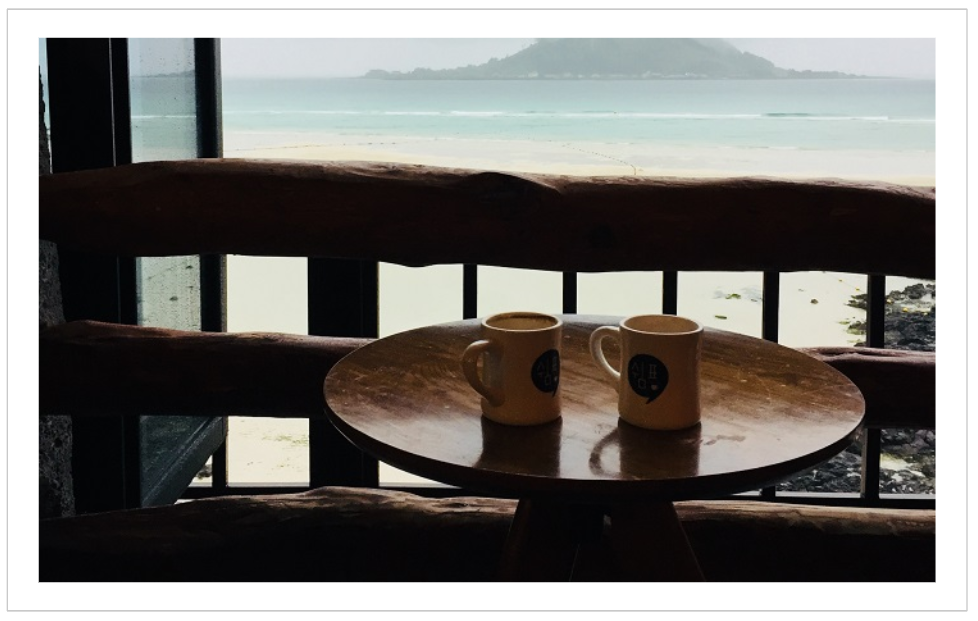

You'd like to work from wherever you want?
A day of endless meetings and extensive slide decks without impact feels like waste to you?
You love to try new things, to create new things and to get real results?
Then programming could be the right thing for you!
As a developer you are not only super desirable - you have a lot more priceless advantages!
You can work wherever you want
1. Developers 'speak' the same programming languages everywhere in the world
Programming languages always have the same 'grammar' and the same 'vocabulary'. And most companies rely on well-known and proven programming languages. So the chances that a development team in Sydney or Vancouver will use the languages you know are quite high. :)I hardly know of a development team that is not international. A set of programming skills and a solid knowledge of English will allow you to quickly integrate into any international team. And thus it offers you really good chances to find a job in your favourite city.
2. Your laptop is already enough
As a developer you are exceptionally flexible, because it is one of the most digital jobs around. All you really need is your laptop. Of course there are also meetings in software development teams. But these can usually be done remotely without any problems.You are much less bound to an office or a place than in many other jobs. And this doesn't only apply to real home office. There are companies for whom it doesn't matter at all whether you do home office at home, in a beautiful co-working space or in a coffee shop at the beaches of Hawaii.
If you like to work alone and get along well without the daily personal contact to your team, you have another advantage: you can also apply to companies that have no location in your favourite city and are open for remote work. Your choice of jobs is even greater then and you can search for something you really like, regardless of location.
3. You are absolutely industry-independent
'Where' refers not only to the place but also to the industry in which you work. Digital products can be found in nearly every industry and the same programming languages are used over and over again. If you know the programming languages and technologies, you can be quite flexible.You have the amazing opportunity to choose an area that you really enjoy. If a product inspires you, you will easily understand the market, make suggestions and not only build the product, but actively participate in shaping it.
I have made the experience that I enjoy my work especially when I understand the big picture and stand behind it myself. This is exactly when I achieve the best results and develop myself the most. So I can only encourage you to take the chance and look for a product that you really like.
You participate in shaping the future
4. Digital products have a huge reach
With hardly any other type of product you can reach more people than with digital products. Statista has forecast 3.8 billion smartphone users worldwide for 2021. That's almost half of our global population and that's only smartphones.Let's stick with the smartphones for now. You have built a beautiful app, received great feedback and now you want to share it. Compared to physical products, you don't have to duplicate and send it out at great expense. You can simply put it online and in no time anyone can access your app. Digital products scale incredibly well!
If you pay attention, you'll find that software just hides everywhere. In cars, airplanes, home appliances, fitness equipment, supermarket checkout counters, ATMs, ... Software has an enormous impact on our everyday life. And since you, as a developer, are the one who builds the software, you help shape an important part of our future.
5. There is still much potential for improvement
In many areas of our world there is still incredible potential for improvement. Digital products are certainly not the solution to all our problems. But we can find creative, digital solutions for partial problems and thus make a meaningful contribution to the whole.For example, digital products can help to save CO2 in transportation, carry education to developing regions or enable faster medical diagnoses. There are countless opportunities to develop solutions that really help to improve our future. With developer skills, you are the one who actually builds these solutions. So you have quite a powerful (and fulfilling!) tool to make a valuable contribution.
You gain a whole new freedom of action
6. You become more self-confident and therefore more creative
When you know how things work, you can approach them with a whole new confidence. If you learn programming, you will understand step by step more about what is behind software and what is possible. You will experiment and become more and more confident.And then you automatically get ideas. Because you have the confidence and feel for what you can do with code, you're constantly coming up with new things you could build. You get curious, do some research and new ideas emerge. Developer skills trigger a whole new creativity, curiosity and problem-solving skills in you.
7. You can independently implement your own ideas and projects
For me this is one of the most ingenious advantages of developing! In the past, our tinkerers and inventors had to purchase vast amounts of physical material and tools if they wanted to realize their ideas. Today, with programming skills it's something completely different. If you have an idea for a digital product, you can just start. Without any major investment. All you need is your head, time and your laptop.You can be incredibly creative. You need think about the functionalities your product should have, which technologies you want to use, how you want to design the whole thing visually, etc. And if you need help with the implementation, Google usually knows the answer. So you're like a mixture of student, engineer, architect, designer and - if you want to share your product with others - marketing manager. A super exciting, enriching and inspiring hobby!
8. You can start your own business
Imagine you had a really good idea for an app, you implemented it and realized that it could add value to other people as well. Sharing your own digital product is - as mentioned above - quite easy. Websites are easy to publish, apps are easy to put in an appstore, and social networks offer the opportunity to do a lot of marketing. And there are also numerous ways to monetize digital products.So you have the chance to let your hobby grow into a small business on the side. You can try it out pretty relaxed and risk-free - quite a privilege.
And even if your primary goal is to become independent and less to implement your own idea, being a developer is a good idea. There are enough offers for developers to work as freelancers.
You invest in your own future
9. You stay fresh in your head
As a developer, you are constantly thinking about how to find a solution by taking logical steps. So you're busy every day training your brain and solving puzzles. It always makes me quite satisfied when I have managed to solve a new programming challenge. Since I started programming I even have the feeling to be clearer and faster in my head :)The tech world is constantly changing and you can (or have to) learn something new every day, even after years of experience. That's not only fun, but also keeps you fresh in your mind in the long run.
10. You maximize your job opportunities
Developers are wanted everywhere. Companies that do not increasingly go digital will hardly remain competitive in the long term. This means that, on the one hand, these companies will need more IT experts and, on the other hand, new companies will emerge that build digital solutions. So as a developer you have very good prospects on the job market.11. You will also become more competent in other positions
Even if you find that programming is not for you, a certain basic understanding is definitely worthwhile. As businesses become more and more digital, you'll probably find it hard to avoid digital topics.If you have an idea of what is behind software, how it is created and what expectations are realistic for software teams, you will be able to handle many other jobs much more competently. Whether it's setting realistic project deadlines, marketing a digital product or interviewing IT professionals as a recruiter - it will always help you.
12. Developers are paid very well
Last but not least, as a developer you can definitely live well from your job! :)Photo by Fabian Blank on Unsplash
I hope I could inspire you and maybe even trigger a little interest in coding in you! The threshold to learn programming is really low and there are enough companies that even hire developers without a university degree. Just try it and see how you like it. You have nothing to lose! In my article I want to learn programming - where do I start? you will find my best tips and resources to get you started today.
See you!
Caro
Leave a comment
Feel free to leave me a comment. Your e-mail address will not be published. The fields marked with a * have to be filled out to send the comment. It may take a few hours until your comment is published.